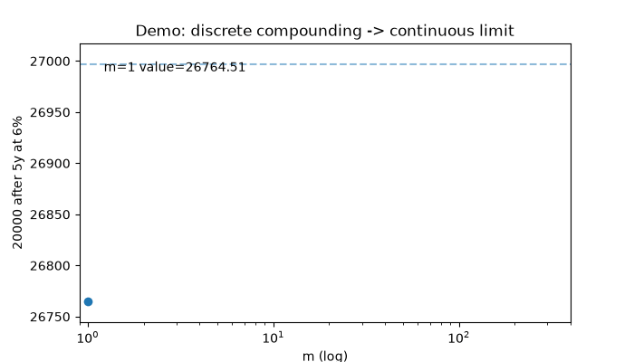
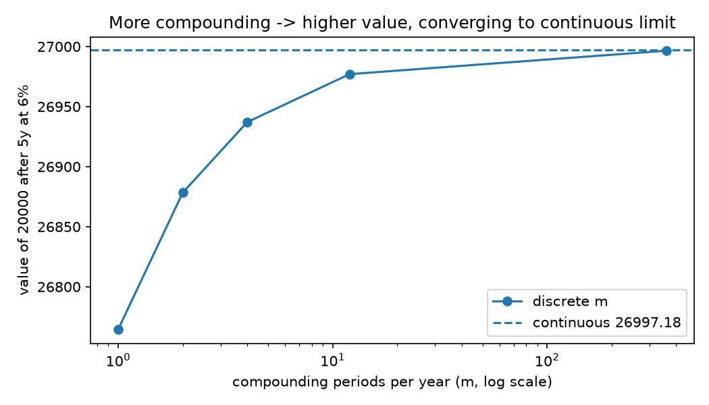
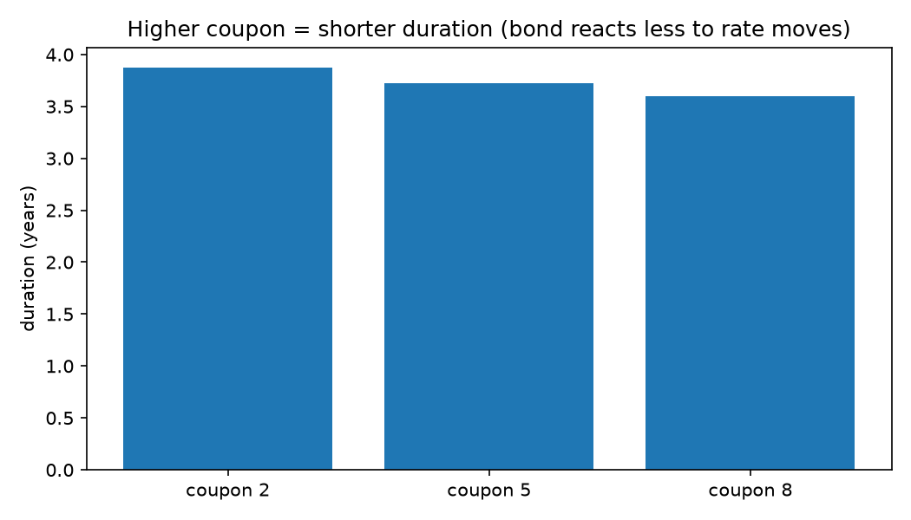
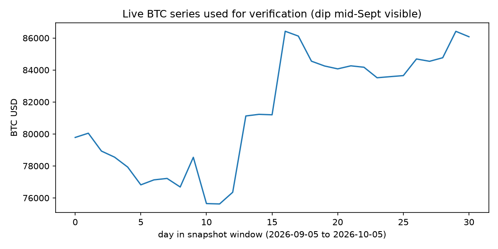
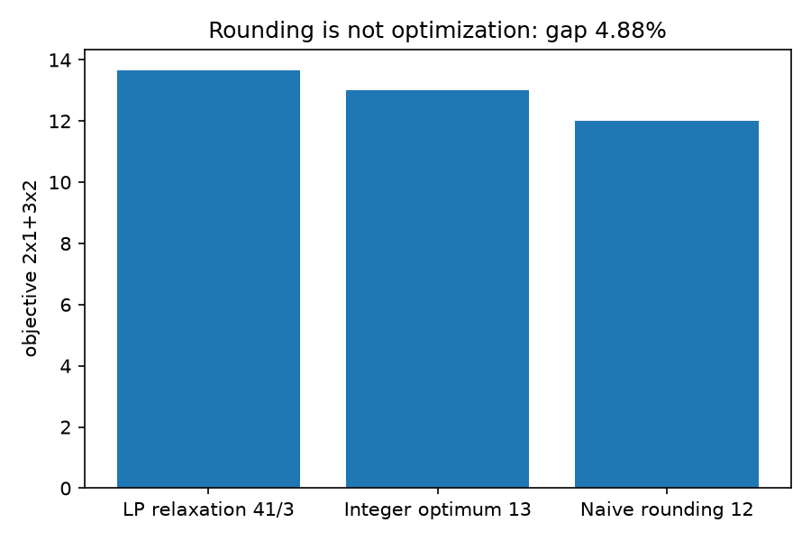

From textbook formulas to live markets in 60 seconds. The standard German economics-math textbook (Ch.27–30: interest, annuities, loans, bonds, optimization) as tested Python — checked on Apple, Bitcoin and Euro/Dollar/Yen from October 2026.
CEO summary: Every key textbook number reproduces exactly (€20,000 → €35,816.95; annuity €9,238.99; bond 103.63). The same code is stressed at 4% vs 6% and on live data. One Docker command reproduces everything. Six publishable findings included. MIT-licensed for class and boardroom.
Try it in 60 seconds ▶ Watch the demo 🌱 Beginner guide€20k, 10y, 6% — simple vs compound. The first line every student must feel.
5 × €1,000 at 5% annuity end value. Bar value, pre/post variations included.
€40k loan, 5y, 5% yearly payment. Rest-debt and split verified.
Bond price at 4% vs 6%. Duration 3.729y → 3.718y. Higher yield = shorter wait.
Production LP (3,4)=32 with zero duality gap. Transport 106 → 100 optimum.
Integer optimum (2,3)=13 beats naive rounding 12. Rounding is not optimization.
READMEs play GIFs inline but block video players. This page plays full video. The GIF below is the same animation as the MP4.





Interest: simple K0·(1+n·i) vs compound K0·(1+i)ⁿ → continuous K0·e^{i·n}.
Present value: future €1,000 = 1000/(1+i)⁵ today; duration = average arrival time.
Optimization: linear = Simplex/duality; integer = Branch-and-Bound (rounding fails).
pip install -r requirements.txt python -m pytest tests -q PYTHONPATH=. python experiments/exp01_zins_verification.py
from src.finanzmathematik import zinseszins_endwert, annuitaet print(zinseszins_endwert(20000, 0.06, 10)) # try 0.04 print(annuitaet(40000, 0.05, 5))
git clone <your-fork-url> opitz-live && cd opitz-live pip install -r requirements.txt python -m pytest tests -q PYTHONPATH=. python experiments/run_all.py docker compose build && docker compose up research
| Asset | Snapshot value | Use |
|---|---|---|
| Apple AAPL | 333.69 | Equity anchor |
| Bitcoin 30d | 79,781 → 86,078 (+7.89%, MDD 5.53%) | Drawdown lab |
| ECB FX per USD | EUR 0.89087 · GBP 0.75753 · JPY 157.67 | €6 → $6.736 conversion |
| Backdrop Sep-2026 | Rates up US/EU | 4% vs 6% stress |
| Exp | Question | Output |
|---|---|---|
| EXP01 | Interest + FX + BTC hold? | benchmarks/exp01_results.csv (14 rows) |
| EXP02 | Annuity/loan/bond at 4% vs 6%? | benchmarks/exp02_results.csv (17 rows) |
| EXP03 | LP/transport/KKT/B&B? | benchmarks/exp03_results.csv |
| EXP04 | Six hidden patterns? | benchmarks/exp04_results.csv |
1) Push this repo to GitHub (keep preview.html at root).
2) Settings → Pages → Build and deployment → Source: Deploy from a branch → Branch main, Folder / (root) → Save.
3) Open https://<you>.github.io/<repo>/preview.html. Alternative: move page + docs/ to /docs and set Folder to /docs — relative paths keep working.
src/ (textbook code) · experiments/ · tests/ (9 tests) · benchmarks/ (CSVs) · data/snapshots/ · docs/ (charts+video) · papers/OUTLINE.md · Dockerfile + docker-compose.yml + Makefile. MIT — see LICENSE.